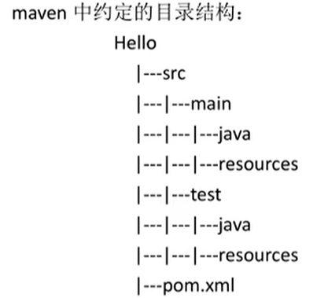

一、Maven约定的目录结构（约定是大家都遵循的一个规则）
每一个maven项目在磁盘中都是一个文件夹（项目-Hello）
Hello/
----/src
--------/main #放主程序（java代码和配置文件）
-------------/java #放程序包和包中的java文件
-------------/resources #放java程序要使用的配置文件
-------/test #放测试程序代码和文件的（可以没有）
-------------/java #放测试程序包和包中的java文件
-------------/resources #放测试java程序要使用的配置文件
---/pom.xml (maven的核心文件（必须有）)


执行结果：

二、设置本机仓库（存放资源的目录）地址：
1、修改maven的配置文件，maven安装目录/conf/settings.xml
先备份 settings.xml
2、修改localRepository 指定目录（不要使用中文目录）
<localRepository>修改后的目录</localRepository>
三、仓库
仓库：存放maven使用的jar和项目要使用的jar。
仓库的分类：
1>本地仓库：个人计算机上的文件夹，存放各种jar
2>远程仓库：在互联网上的，使用网洛才能使用的仓库。
远程仓库又分为
1、中央仓库：最权威的，所有的开发人员共享集中的一个仓库
2、中央仓库的镜像：就是在世界各地存放的中央仓库的备份。
3、私服：在公司内部，在局域网中使用，不能对外使用。
仓库的使用：maven仓库的使用不需要人为参与。
开发人员需要使用mysql驱动--->maven首先查本地仓库--->私服--->镜像--->中央仓库
四、pom项目的对象模型
pom.xml是Maven的灵魂，所以，maven环境搭建好了之后，所有的学习和操作都是关于pom.xml的。
《gropId 、artifactId、version》一起被称为坐标，可以在互联网上唯一的标识项目，每个项目都必须有坐标。
搜索使用的中央仓库：www.mvnrepository.com(使用gropId或者artifactId搜索)
pom.xml初始


依赖
<dependencies>
<dependency>
<groupId>mysql</groupId>
<artifactId>mysql-connector-java</artifactId>
<version>5.1.9</version>
</dependency>
</dependencies>
五、 maven的生命周期，maven的命令，maven的插件
1、maven的生命周期：就是maven构建项目的过程，清理，编译，测试，报告，打包，安装，部署。
2、maven的命令：maven独立使用，通过 命令，完成maven的生命周期的执行。


3、maven的插件：maven命令执行时，真正完成功能的是插件，插件就是一些jar文件（java类）。
六、测试
1>单元测试（测试方法）：用的是junit，junit是一个专门测试的框架（工具 ）。
junit测试的内容：测试的是类中的方法，每一个方法都是独立测试的，方法是测试的单元。
单元测试使用步骤：
1>加入单元测试依赖。
2>在maven项目中的src/test/java目录下，创建测试程序。
1、测试类的名称，是Test+要测试的类名
2、测试的方法名称，是Test+方法名称
例如要测试HelloMaven，创建测试类TestHelloMaven
public class TestHelloMaven{
@Test
public void testAdd(){}
}
其中testAdd是测试方法，它的定义规则：
1、方法必须是public的
2、方法返回值必须为void
3、方法名是自定义的，推荐是testAdd
4、方法上面要加入注解@Test